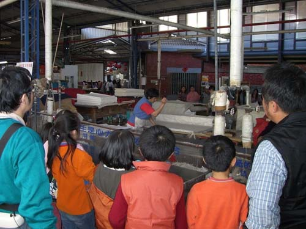

廣興紙寮
可認識並體驗製紙的過程。有紙藝教室及紙文化舘，發揚中國傳統文化。
古時造紙，一般搭寮於河邊取汲水源，由於河水不定時氾濫，所以設立之工作場域，並不舒敞寬大為主，反而以簡單、易撤為考量。故不以紙廠自居，而叫做「紙寮」。
原創人黃耀東先生，在35歲那年有鑑於當時埔里紙業蓬勃發展，以及愛蘭台地水質良好的造紙條件下，於民國54年創立「廣興製紙加工所」，雖然是以代工為主，但黃老先生同時也致力於手工紙的研發。民國62年開始手工宣紙的內銷，並易名「廣興造紙廠」。民國80年成功研發高品品質的手工宣紙，開始外銷日、韓，是「廣興造紙廠」的巔峰時期。後來黃老先生將「廣興造紙廠」傳承給第二代的黃煥彰先生經營管理。(資料來源：廣興紙寮網站)